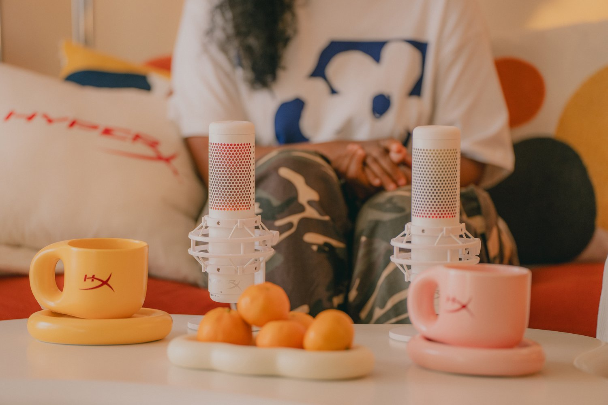
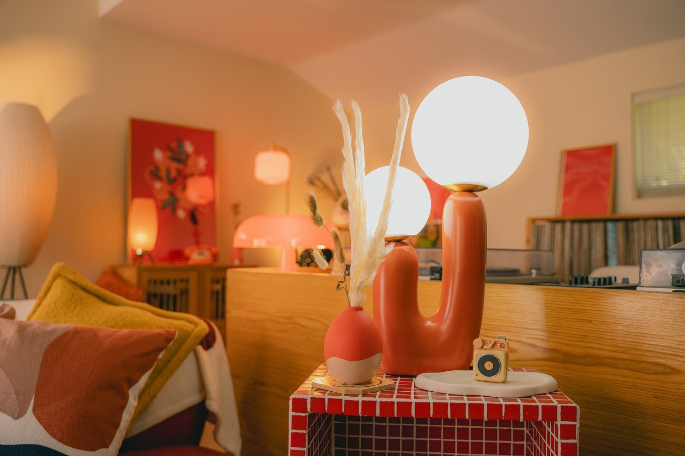
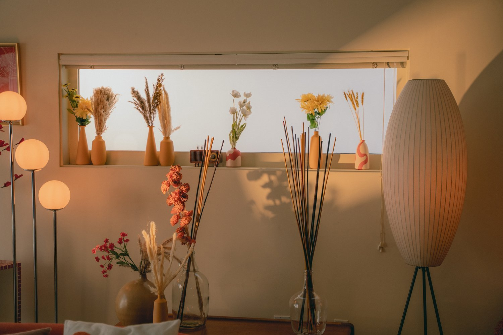
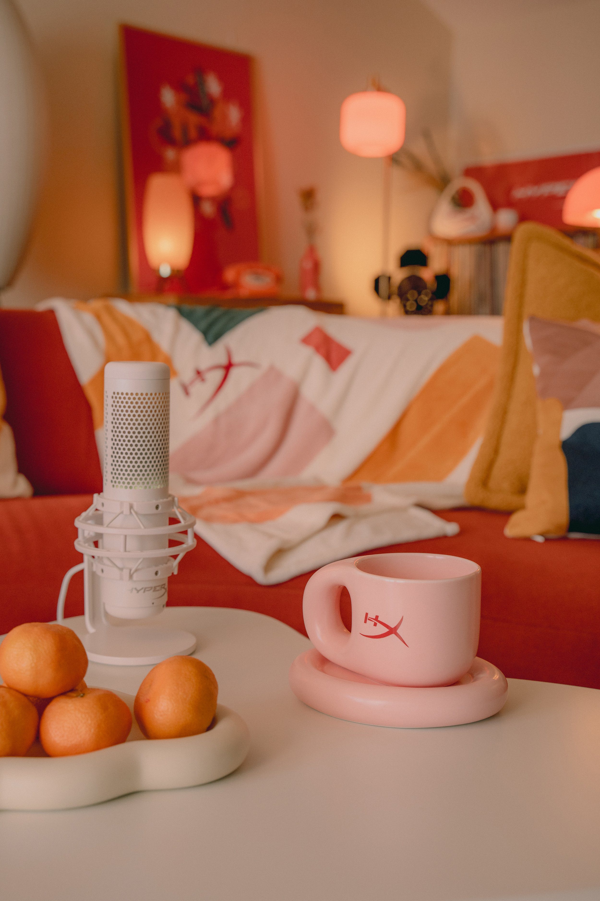
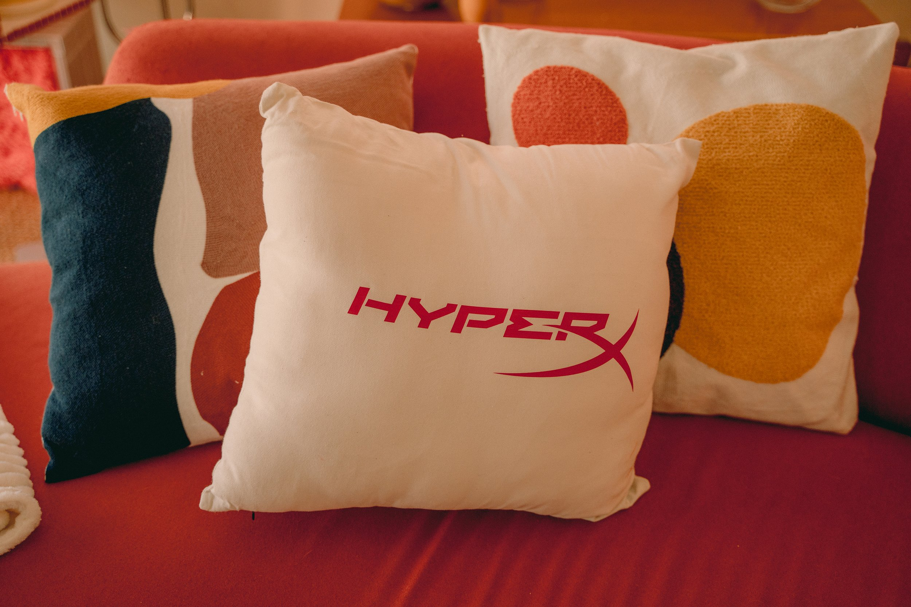
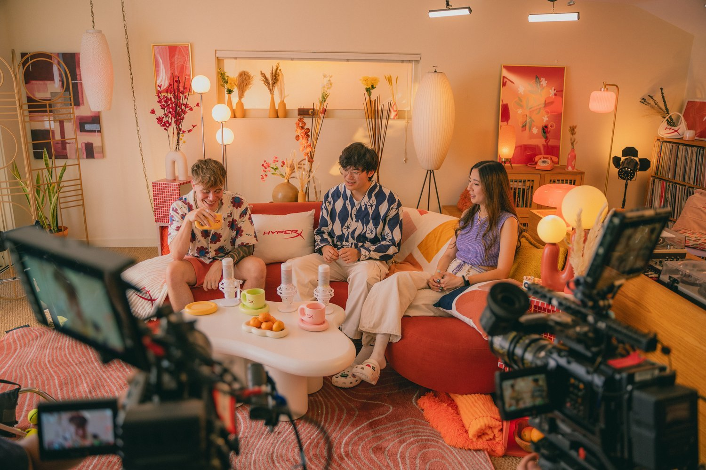

HyperX Podcast
Client: HP, HyperX
Year: 2023
Role: Set Fabrication | Set Design | Production
In collaboration with HyperX, Frenzy designed and produced the custom set for Unmuted — a visually dynamic podcast series centered on hot takes, bold opinions, and unfiltered conversations from across the gaming universe. This wasn’t just a set — it was a stage for outspoken voices, and at its heart sat the star of the show: the microphone.
The visual language of the set was inspired by the heat of the conversation—with warm lighting tones, layered reds and ambers, and funky, expressive shapes that amplified the energy of every discussion. The layout created an intimate but high-impact visual—ideal for one-on-one debates, roundtables, and spontaneous reactions. Notable podcast guests included top talent like Fuslie, Blaustoise, and BTMC.
Unmuted was built to spark conversation—but we designed the space to make it impossible to ignore.
The Product as the Centerpiece
We treated the HyperX QuadCast microphone as more than equipment—it became the focal point of the set design. Positioned on custom risers, lit with precision, and backed by sculptural elements that drew the eye, the mic stood as a symbol of unfiltered voice. The layout and lighting were designed to make every guest feel like they were stepping into the spotlight, ready to drop a hot take.
Lighting Up the Conversation
Accent lighting highlighted custom set pieces and added visual depth to the video by layering light from foreground to background. The light fixtures, crafted from a mix of materials like plastic, ceramic, glass, and paper, created a cohesive look through their eclecticism.






